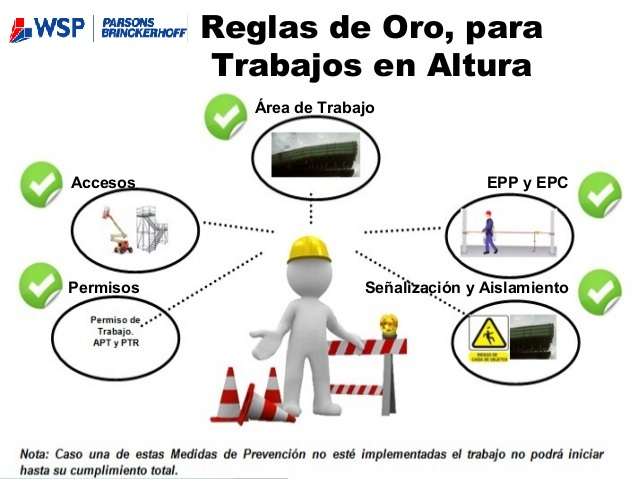

No se percibe desde una percepción personal que se sigan prácticas de seguridad laboral en función de la preservación de la integridad y disminución de accidentes laborales. Escenarios como solo utilizar botas de seguridad teniendo un aviso que marca como obligatorio EPP casco, zapatos de seguridad, uniforme ("validar el chaleco antirreflejante") y guantes.
Acomodar mercancía cerca de colaboradores ("Un refrigerador cerca de personal que está en una computadora") aunque este delimitada su área de trabajo con una franja amarilla bajo el motivo de que no cabe la mercancía.

No contar con acciones que estén disminuyendo la probabilidad que suceda un accidente laboral propicia las condiciones para que estos sucedan.
o Realizar un análisis de los factores de riesgo ergonómico debido al manejo manual de cargas en cada una de las etapas de carga de la mercancía tomando como base la NOM-036-1-STPS
Impartir pláticas de seguridad laboral sensibilizando a todo el personal sobre la importancia de la seguridad laboral brindándoles la información necesaria para trabajar de manera segura.
Crear un programa de detección de actos y condiciones inseguras en la que todos se vean involucrados a formar un entorno de trabajo seguro.

Estandarizar y hacer que formen parte de la cultura el proceso de seguridad, en todos los colaboradores fomentara un ambiente seguro de trabajo.
El programa de detección de actos y condiciones inseguras se deberá liderar con todas los demás almacenes para prevenir estas condiciones en entornos de trabajo similares.
En el interior del almacén las palomas han invadido las instalaciones. Poblando desde el área de calidad hasta el área de comedor. Existiendo la probabilidad de que contaminen los alimentos de los colaboradores, así como dañar la mercancía.
Las palomas son una plaga portadoras y transmisoras de enfermedades, parásitos o bacterias, sobre todo a través de sus excrementos.
Erradicar la plaga al interior del almacén
Implementar puertas de plástico en las entradas del almacén, así como bloquear cualquier otra entrada para impedir nuevamente la invasión

Condiciones de trabajo apropiadas para el consumo de alimentos, disminución de daño a la mercancía por plagas.
Contactar con una empresa especializada en plagas para erradicar de forma humana a la plaga y evitar una segunda invasión
Clausurar el área de comedor dentro del almacén hasta erradicar la plaga para evitar incidencias.
Existe un vacío en el que Liverpool no hace volados, se le proporciona el numero de una mudancera, pero si la tripulación tiene las habilidades para realizarlo y se llega a un acuerdo con el cliente la tripulación realiza esta acción.
Al no ser una actividad que asuma Liverpool se originan situaciones problemáticas, tales como no se cuenta con materiales para cerrar momentáneamente una banqueta "Conos o banderines" al subir mercancía por la vía pública.
Se compromete la integridad de los colaboradores en una situación donde hay múltiples factores de riesgo como por ejemplo trabajo en alturas , tropiezos con la soga, atrapamiento de extremidades por la soga.
Realizar un volado es una actividad que requiere más tiempo que solo entregar un paquete por lo que el tiempo de ruta se extiende y al no ser una actividad que realice propiamente Liverpool se crea un vacío en cuanto a horas extras que deberían ser pagadas esto dicho bajo mi percepción.
Asumir o prohibir la actividad de realizar un volado
Impartir un curso de capacitación de buenas prácticas para realizar esta actividad, así como buscar la manera de crear escenarios controlados para introducir la practica dentro del curso
Proporcionarel material necesario para seguir adecuadamente los procesos de seguridad necesarios para salvaguardar la integridad de los colaboradores y la población.

Se estructuraría el proceso de realizar un volado minimizando riesgos para los colaboradores, además que se cuidaría y se evitaran futuros incidentes que pudiesen comprometer la imagen de la empresa.
La misión de Liverpool es Servimos al CLIENTE, en todo lugar, todos los días, toda la vida. y no he visto representación más exacta de esto que al estar con 3 colaboradores que con mucho esfuerzo suben, maniobran cargan y acomodan mercancía de aproximadamente 90 kl. Prohibir realizar un volado destruiría una de las actividades donde se puede ver de manera clara la misión de Liverpool.
No existe un protocolo de revisión de las unidades orientado a las 5s. Cabe señalar que, si existen protocolos de estado técnico de la unidad "Gasolina, aceite etc."

Las unidades en cuestión presentan un espacio de trabajo desagradable para laborar, según comentarios recolectados en paquetería y big ticket en ocasiones las unidades son recibidas con basura ("botellas vacías, envolturas"), desechos ("botellas con orines"), daños a la unidad ("roturas en guarda papeles") y falta de acondicionamiento ("sin cinturón de seguridad").
Realizar un check de revision de la unidad como se entrega y como se recibe basando este check en la metodologia de las 5s
Seiri: Clasificación y separación entre útil y no útil.
Seiton: Organización en todo el lugar de trabajo.
Seiso: Limpieza en la empresa.
Seiketsu: Normalización y correcciones.
Shitsuke: Disciplina y compromiso en continuar cumpliendo las 5S.
La unidad presentará menor desgaste y el ambiente para laborar será más agradable.
El hallazgo del cinturón de seguridad es una situación de carácter urgente en el que se deben inspeccionar todas las unidades para realizar esta corrección.
El check debe ser ágil para no entorpecer la operación se deben revisar cosas puntuales y tener la confirmación de ambas partes quien recibe la unidad y quien la entrega